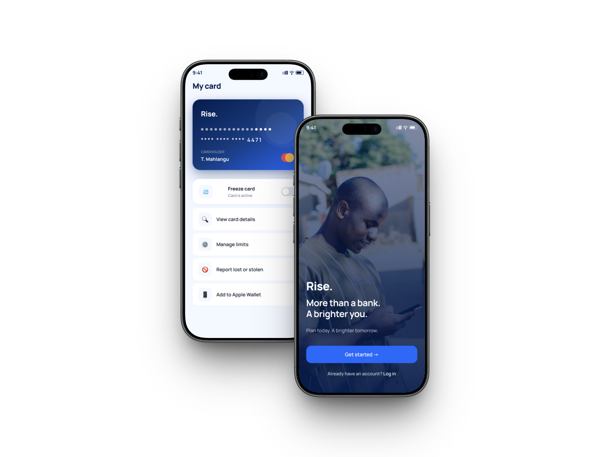
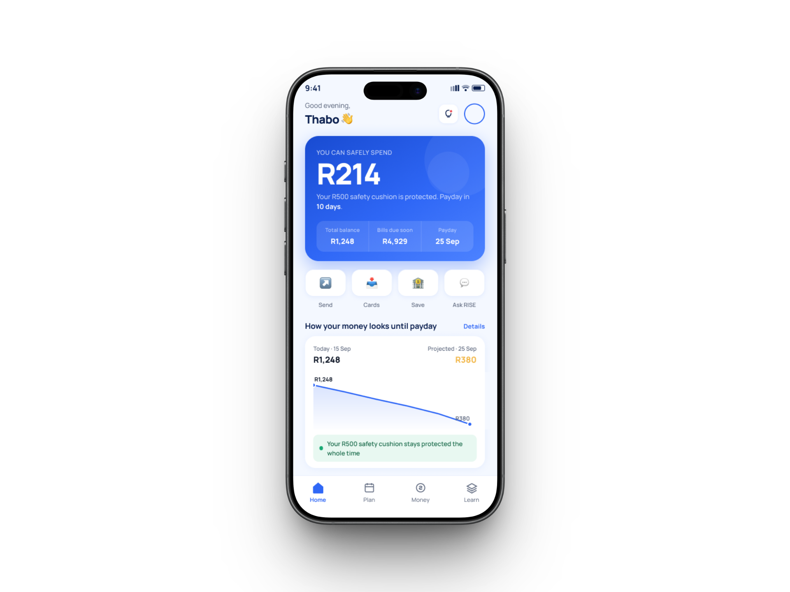
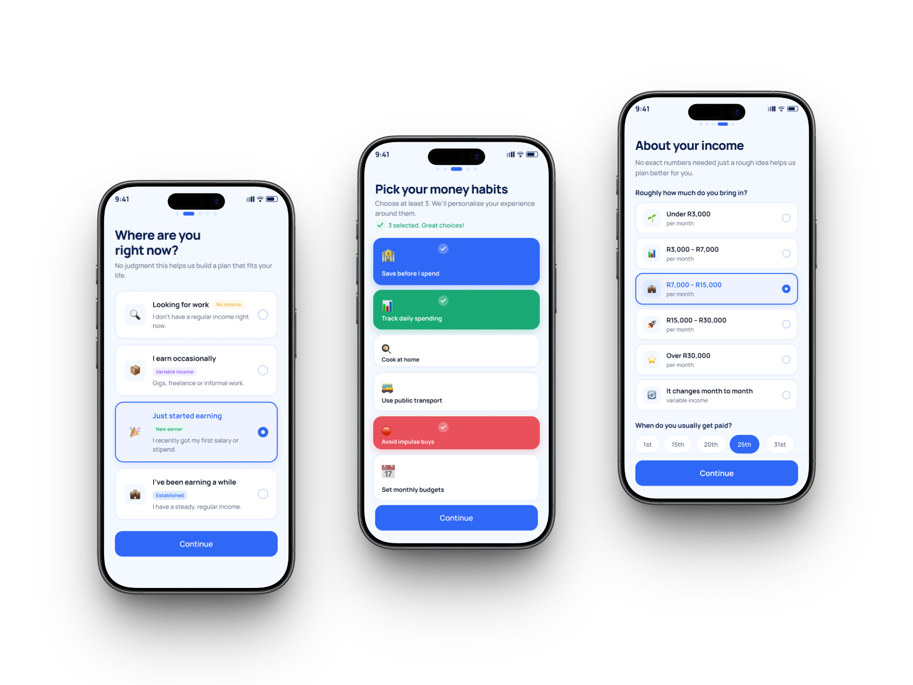
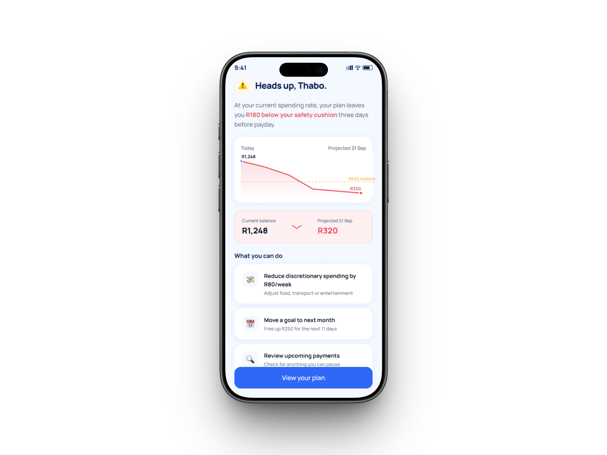

Financial confidence for the first months after the first paycheck.
RISE explores what happens after a young person finally gets the job: new obligations, family pressure, uncertainty and the need to make money last without feeling judged.

Getting the job does not end the pressure. It changes its shape.
First-time earners are balancing transport, debit orders, family obligations and unfamiliar financial decisions. A standard banking balance shows what is there now, but not whether spending it will leave the user okay later.
The design direction shifted from simple balance visibility to financial confidence: safe-to-spend, upcoming deductions, buffer warnings and clear confirmations.
The Buffer is a first-class financial object.
Alternative considered
Treat the buffer as a normal savings goal alongside a phone, holiday or emergency fund.
Why I rejected it
A safety mechanism should not compete with aspirational goals. Stability and ambition need different hierarchy.
Warn before the buffer breaks.
A conventional fixed-threshold alert reacts after the risk is already obvious. RISE instead uses context and upcoming obligations to intervene before the user's financial breathing room disappears.



Ask a question, learn at your pace.
Ask RISE treats help-seeking as a normal banking behaviour rather than an escalation. Suggested prompts reduce the anxiety of starting from a blank screen, while short Money 101 lessons appear near the moment of uncertainty rather than in a separate education portal.
The next step is usability testing.
This is a self-directed concept. The highest-value next step would be moderated prototype testing with first-time earners to validate whether users understand the buffer, distinguish safe-to-spend from available balance, and act appropriately on predictive warnings.